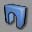
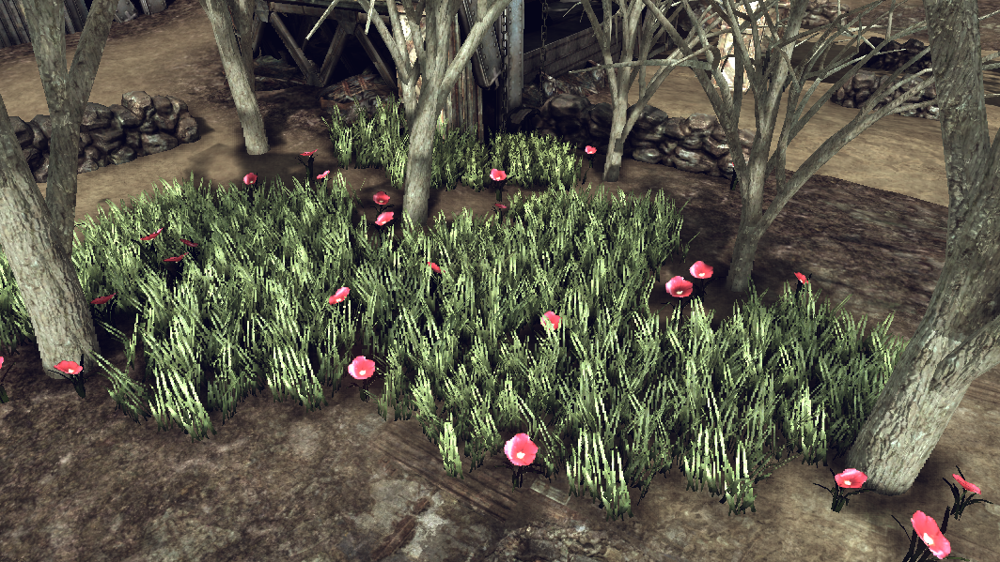

UDN
Search public documentation:
StaticMeshModeKR
English Translation
日本語訳
中国翻译
Interested in the Unreal Engine?
Visit the Unreal Technology site.
Looking for jobs and company info?
Check out the Epic games site.
Questions about support via UDN?
Contact the UDN Staff
日本語訳
中国翻译
Interested in the Unreal Engine?
Visit the Unreal Technology site.
Looking for jobs and company info?
Check out the Epic games site.
Questions about support via UDN?
Contact the UDN Staff
스태틱 메시 모드
문서 변경내역: Warren Marshall 작성. 홍성진 번역.
개요
스태틱 메시 작업하기
시작하기
스태틱 메시 모드에 들어가려면, 다음과 같은 모드 버튼을 클릭합니다:
속성
이 모드에 있을 때, 떠다니는 창에 속성이 나타나며, 여기서 설정해 줄 수도 있습니다.
Pre Rotation (미리 회전)
스태틱 메시를 월드에 놓기 전에 적용할 회전값입니다. 이를 통해 메시 작업을 할 때 특정 축을 무작정 위로 향하게 하기 보다는 아래쪽으로 향하도록 할 수 있습니다. "Pre Pivot" (미리 피벗)의 회전 버전이라고 보시면 됩니다.Rotation Min/Max (회전 최소/최대)
적용할 회전 트윅 범위를 정의합니다. 예를 들어 꽃밭을 놓는 중이라 칠 때, RotationMax->Y 를 360으로, Pitch 최소/최대는 -15/15로 설정해 주면 좋습니다. 꽃을 놓을 때마다 랜덤 yaw(좌우) 회전값을 가지며, 한 쪽이나 다른 쪽으로 조금씩 기울여 놓이게 됩니다.Scale 3D Min/Max & Scale Min/Max (스케일 3D 최소/최대 & 스케일 최소/최대)
DrawScale3D 및 DrawScale 속성에 각각 적용할 값의 범위를 정의합니다. 이를 통해 크기 측면에서 약간씩 달라지는 메시를 놓을 수 있습니다.레벨에 메시 놓기
레벨에 메시를 추가하는 방법은 여럿 있습니다만, 이 모드에 중요한 것만 알아보겠습니다. S 키를 누르고 3D 뷰포트에 클릭하면, 현재 선택된 스태틱 메시가 레벨에 추가됩니다. 이 메시는 여기 속성 창의 설정에 영향을 받지 않습니다. 그러나 S+클릭시 ALT키를 누르고 있으면, 스태틱 메시가 클릭하는 표면에 정렬되게 되며, 속성 창에 설정해 둔 것에도 영향받게 됩니다.예제

가끔은 오래된 차에도 이렇게 볕들 날이 있답니다: